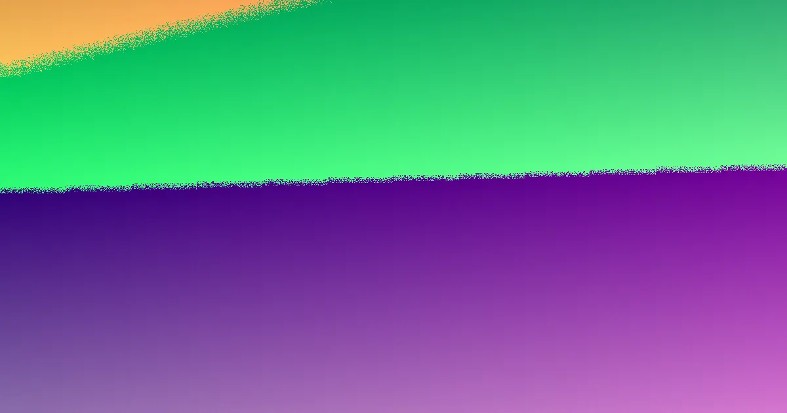

A concrete sleeper retaining wall in Brisbane may cost about $300 per square metre for a simple, accessible low wall, rising to $1,000 or more for taller, engineered or difficult-access work. A wall up to 1 m high may generally avoid building approval when it carries no surcharge load and is at least 1.5 m from a building or another retaining wall. Taller or more complex walls usually need approval and an engineered design.
For homeowners comparing concrete sleeper retaining walls brisbane options, the practical decision comes down to wall height, soil loading, drainage, access, approval requirements and the detail included in each quote.
Concrete Sleeper Retaining Walls Brisbane Explained
Brisbane Sleeper Wall Installers describes concrete sleepers as steel-reinforced panels installed between galvanised steel posts. The system is commonly considered for garden beds, terraces, levelled lawns and replacement of older timber sleeper walls.
Before comparing finishes, record the approximate wall length and height, the slope behind it, access for excavation equipment, and anything close to the proposed line. A narrow side path or steep block can change excavation, post installation and spoil removal requirements. The wall is holding soil, so the quote needs to address more than the visible face.
Concrete does not rot and is not eaten by termites. Manufacturers often quote a design life of around 50 years, while the installed result still depends on the design, drainage, footing work and site conditions.
Choose between a low garden wall and engineered work
A low wall for a garden bed or levelled lawn is a different project from a taller wall supporting a slope, driveway or other load. The distinction affects design, approvals, excavation and price.
- Low garden or terrace wall: a wall no more than 1 m high, with no surcharge load and at least 1.5 m from a building or another retaining wall, generally needs no building approval.
- Taller or loaded wall: work outside those limits needs building approval and usually a site-specific design.
- Engineered wall: where design or certification is required in Queensland, it must come from a Registered Professional Engineer of Queensland or someone working under that engineer's direct supervision.
Ask the installer to state which category applies and why. If the site includes a building, another retaining wall, a driveway or stored materials near the edge, those details should be considered before the price is accepted.
For a wider comparison of local installation considerations, see retaining wall installer questions for Brisbane projects.
Drainage, posts and sleepers determine the build
Drainage is part of the retaining system rather than an optional finishing detail. A typical build described for these walls uses slotted agricultural pipe at the base, free-draining gravel backfill and geotextile fabric. Water should be directed to a lawful point of discharge, not onto neighbouring land.
Common sleepers are about 2.0 m or 2.4 m long, 200 mm high and 75 to 80 mm thick. They are steel-reinforced and are often rated at 40 MPa or more. These figures help identify the type of product being quoted, but they do not determine the post size or hole depth for every site.
Post size and hole depth should come from the manufacturer's design tables or an engineer. Post holes are commonly dug roughly as deep as the wall is high, with the final depth set by those design tables or engineering advice. Request the proposed drainage outlet, backfill material, post specification and excavation allowance in writing.
Understand the cost signals before comparing quotes
Published Brisbane price guides put installed concrete sleeper walls from around $300 per square metre of wall face for a simple, accessible low wall, rising to $1,000 or more per square metre for taller, engineered or hard-to-access work. These are indicative figures, not a fixed offer.
Height, access, excavation, drainage, engineering and approvals can all affect the final price. A lower figure may exclude spoil removal, difficult ground, drainage components, engineering, permit work or reinstatement of landscaping. Ask for an itemised quote that separates the wall face from these associated tasks.
- Confirm the measured wall length and height.
- Check whether excavation and disposal are included.
- Ask who is responsible for drainage design and discharge.
- Identify any engineering, approval or certification allowance.
- Clarify whether fences, landscaping or repairs to adjacent areas are included.
Concrete sleepers generally cost more upfront than treated pine, so the comparison should consider the intended service life and the work needed to replace or maintain the existing wall.
Prepare the enquiry and check the paperwork
A useful enquiry includes the suburb, rough wall length and height, photographs, access constraints, nearby buildings or walls, and whether a fence is planned above the wall. These details let an installer discuss the likely category before arranging a site quote.
Before post holes or drainage trenches are dug, a free Before You Dig Australia enquiry identifies underground electricity, gas, water and telecommunications assets. Keep the result with the project records and ask how the proposed excavation will avoid identified services.
If a fence will sit on top, remember that the fence and retaining wall heights count together in Brisbane. A combined height over 2 m above natural ground needs building approval. The quote should show the combined arrangement rather than pricing the wall and fence as unrelated items.
Review the itemised quote, approval position, engineering responsibility, drainage plan and licensing or insurance questions before deciding. Brisbane Sleeper Wall Installers states that an enquiry has no cost and no obligation to proceed, but the final decision should follow a site-specific quotation.
- Describe the site. Provide the suburb, approximate length and height, slope, access limitations and nearby structures.
- Confirm the design path. Ask whether the wall fits the 1 m low-wall conditions or needs approval and an engineered design.
- Review the itemised quote. Check excavation, drainage, posts, sleepers, engineering, approvals, disposal and reinstatement.
- Check underground services. Complete a Before You Dig Australia enquiry before excavation starts.
- Decide after questions are answered. Proceed only when the scope, responsibilities and final price are clear.
| Project type | Likely planning position | Quote questions |
|---|---|---|
| Low garden or terrace wall | Up to 1 m, no surcharge, and at least 1.5 m from a building or another wall generally needs no building approval. | Confirm height, distance, drainage and access. |
| Taller or loaded wall | Outside the low-wall limits, building approval and usually a site-specific design are required. | Ask who handles engineering, approval and certification. |
| Wall with fence above | Combined wall and fence height over 2 m above natural ground needs building approval. | Request the combined height and fence scope in the quote. |
Common questions
How much do concrete sleeper retaining walls cost in Brisbane? Indicative published guides put installed work at around $300 per square metre for a simple, accessible low wall and $1,000 or more per square metre for taller, engineered or difficult-access work. The final quote depends on height, access, excavation, drainage, engineering and approvals.
When does a retaining wall need building approval? A wall no more than 1 m high, with no surcharge load and at least 1.5 m from a building or another retaining wall, generally needs no building approval. Walls outside those limits need approval and usually a site-specific design.
What drainage is used behind concrete sleepers? A typical build uses slotted agricultural pipe at the base, free-draining gravel backfill and geotextile fabric. Water should be sent to a lawful discharge point rather than onto neighbouring land.
Does a fence change the approval position? Yes. In Brisbane, the fence and retaining wall heights count together, and a combined height over 2 m above natural ground needs building approval. Ask for the combined height to be shown in the quote.
This guide covers wall selection, approval triggers, drainage, indicative costs, quoting questions and pre-excavation checks for Brisbane retaining wall projects.